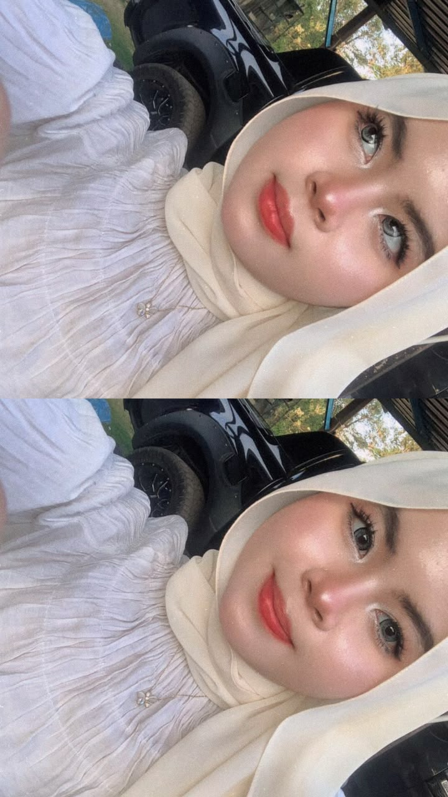
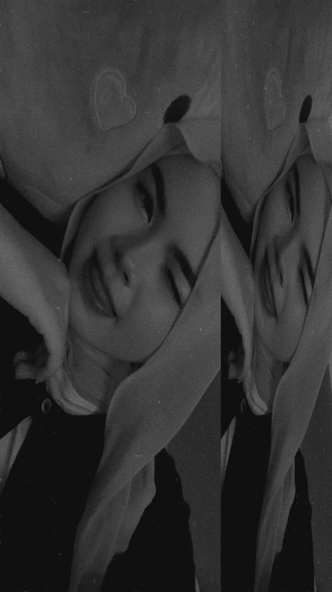

Untuk Favourite Person 🤍
Hai Isya, Nabilot saje je nak cakap yang Nabil suka Isya HAHAHAHA. Sorry tauu kalau Nabil buat web ni nampak macam simple hihihi, harap Isya suka laa.
- Nabil
Surat Hati


Hai Isya, Nabilot saje je nak cakap yang Nabil suka Isya HAHAHAHA. Sorry tauu kalau Nabil buat web ni nampak macam simple hihihi, harap Isya suka laa.
- Nabil